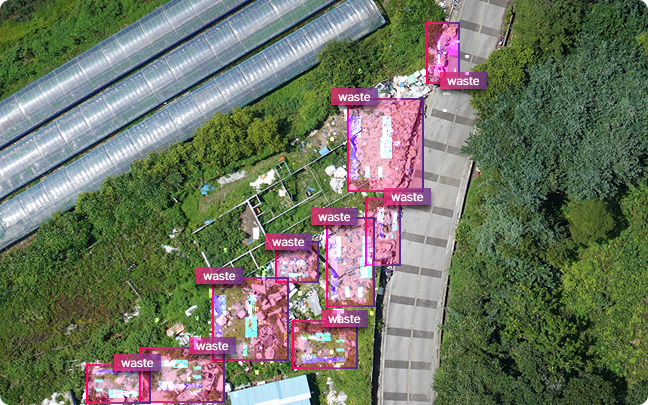
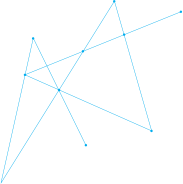
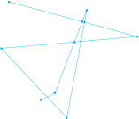

드론 · 항공 · 위성영상과 AI기술을 활용하여
공공서비스 혁신을 지원합니다.





AI 분석 서비스
01사료작물 정보 분석
드론 영상과 AI 분석으로 사료작물 재배 현황을
정확하게 파악하고, 재배 정보와 수확량을 효율적으로 관리합니다.
정확하게 파악하고, 재배 정보와 수확량을 효율적으로 관리합니다.
01
AI 모델 분석
분석서비스를 통해 입력한 이미지에 대한
분석기능과 결과를 제공합니다.
분석기능과 결과를 제공합니다.
02
지도 시각화
분석서비스의 분석결과를
지도 상에 시각화하여 제공합니다.
직관적으로 결과를 확인하고,
신속하고 효과적인 의사결정이 가능합니다.
지도 상에 시각화하여 제공합니다.
직관적으로 결과를 확인하고,
신속하고 효과적인 의사결정이 가능합니다.
03
통계 및 레포팅
AI 분석 데이터를 시각화하여
직관적인 통계 리포트를 제공합니다.
대시보드를 통해 핵심 지표를 모니터링하고,
AI 분석 결과를 조합하여 맞춤형
통계를 생성할 수 있습니다.
직관적인 통계 리포트를 제공합니다.
대시보드를 통해 핵심 지표를 모니터링하고,
AI 분석 결과를 조합하여 맞춤형
통계를 생성할 수 있습니다.